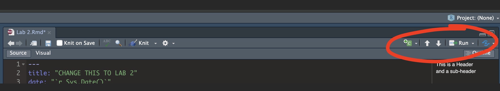

Tutorial 2. Before Each Lab
1. Set up your R-Project
In this class, we will be using a new R-Project for each lab. An R-project is a folder that will store everything to do with each lab in one place on your computer. On the website, each lab will be its own project.
This is incredibly useful - it means that if you switch from R-Cloud, to the lab computers, to your laptop, all you have to do is to move the folder and everything will just work. Equally, its easy to compare labs.
CLICK HERE to learn how to create/return to and use projects on R studio cloud.
CLICK HERE to learn how to create/return to and use projects on R-Desktop.
Learn more here.

2. Create & Knit your R-Markdown File
What is Markdown?
You might wonder at this point about how to save your work.
Typing into console is like having a phone call with your computer; you’re talking but you’re not keeping records of what you say. To see previous commands, you can click the history tab (Environment quadrant) or press the up/down arrows on your keyboard, but when you close R, all record of these commands will be lost. We need instead is a way to save the commands for future use - we can do this using scripts.
There are several types of document, or script that you can create and save in R-Studio. There are about 20 options in the file menu.
In this course we are going to focus on the R-Markdown format and you are going to submit your labs as websites/html files along with your code.
Imagine a normal Microsoft Word document, but halfway through you can press a button and a mini R console appears. You type your code inside the mini console, it runs and puts the plots/output just below - then you leave the console and continue writing about the results. Essentially you never have to take another screenshot of results and move it to your output… Rmd files are also flexible. You can turn them into reports, websites, blogs, presentations or applications with a few short commands.
Read more here: https://rmarkdown.rstudio.com or watch this short video
Creating a markdown document
First, (if you did not already do this) - go to the Packages menu in one of the quadrants, click “install” and install rmdformats. It will give you nice templates without having to learn YAML code)
Go to the File menu on the top left, then click New File - R-Markdown. If this is your first time ever, it might ask to download some packages to be able to do this. Say yes.
Eventually a window will open up:

Click “From Template” and select a template of your choice. Click here to see what different templates look like:
https://juba.github.io/rmdformats/
It will ask you to name your file. Give it a relevant name including your email ID, like Lab-2_hlg5155. A new file should appear on your screen.
Essentially, we have some space for text, some space for code, and a space at the top of the file where we can add information about themes/styles etc. Each grey code area is called a “code chunk”. To run the code inside it, click the little green arrow on the top right.
Depending on the template, your file might contain some friendly text to explain what is going on, which I have annotated here. Read through it, then you are welcome to delete it from line 11 downwards (keep the knitr code chunk)

THREE IMPORTANT BUTTONS - READ THIS
Visual mode
It is MUCH easier to edit markdown documents in the new visual mode. Essentially instead of having to remember text short cuts like * for bold, you can edit the text part as though you were using a word processor
Running Code

On the top right there are a suite of buttons for adding a new code chunk, running code etc.
Knitting

The file on your screen isn’t the finished article. To see how it will look as a final version, we need to “knit” it. Go to the top of the .Rmd file, find the knit button. Press it (you might have to first save your script if you haven’t already, then press it again)
You should see that the Markdown tab “builds” your document and you get an output as a website. The html should also be saved into your project folder. For example, from my other class, here is a file with markdown and knitted output.

If your file looks blank, have you typed anything yet in the script? ;)
3. Add the R-Packages you need
What are packages?
As described earlier, we program in R by typing a series of commands. R is open source and anyone can create a new command. Just as people keep creating apps for phones, over the last 20 years,tens of millions of new custom commands have been created.
Commands tend to be grouped together into collections called Packages or Libraries (two names for the same thing). For example, one package contains the complete works of Shakespeare; another allows interactive website design; another allows advanced Bayesian statistics. There is a package for literally everything and there are now over 20,000 packages available. You can see a selection here: https://cran.r-project.org/web/packages/available_packages_by_name.html
Just as you don’t have every app in the world on your phone, this is far too much to store on your computer, so we choose the ones we need from a free online “app/package store”. You can download the ones you want, ready to load later.
So to access the commands in a package we need these two steps:
- ONCE ONLY: Download the package from the internet, in the way you download an app from the app store
- EVERY TIME: Load the packages you want, like clicking an app icon to open it.
A close analogy is your phone: There are millions of apps available from banking, to 50 different calendar apps. You don’t have every app in the world installed on your phone - and you don’t have every app you do download running at the same time.
Instead you download the apps that you think you will need (occasionally downloading a new one on the fly) - and when you need to use an app, you click on it to open.
Downloading a new package
Note, if you run this command multiple times, or the packages is already loaded, R-Studio might want to restart and sometimes gets confused. If it keeps asking, close R-studio, reopen and try again. If it really doesn’t want to work, open the R program itself and run in the console there.
Manually click
This is like going to the app store to get a new app. Just like you only go to the app store once, this is a one-off for each package. NOTE! For R studio cloud online, you might have to do this for each project.
- Look for the quadrant with the packages tab in it.
- You will see a list of packages/apps that have already been installed.
- Click the INSTALL button in the Packages tab menu (on the left)
- Start typing the package name and it will show up (check the include dependencies box). Install the package.
Using the console
You can also use a command to install a new package:
install.packages("bardr")DO NOT INCLUDE THIS IN YOUR FINAL SCRIPT. The command means “go to the app store” and download a package. You don’t want to do this when pressing knit.
Loading a package (IMPORTANT)
Just as going to the app store doesn’t open instagram, simply downloading a package from the app-store doesn’t make the commands immediately available.
For that you need to load it (like clicking on an app). This can be done with the library() command.
In the console type this to install the full works of Shakespeare in the bardr package. (https://www.rdocumentation.org/packages/bardr/versions/0.0.9). You might need to install it first.
library(bardr)I suggest keeping all your library() commands in a code chunk near the top of the file and running that.. e.g.
I will tell you which packages you need for each lab, but if R tells you it wants a package, then install it AND load it
If you have managed to load a package successfully, often nothing happens - this is great! It means it loaded the package without errors. Otherwise, I suggest running this command TWICE! This is because loading packages will print “friendly messages” or “welcome text” the first time you load them.
For example, this is what shows up when you install the tidyverse package. The welcome text is indicating the sub-packages that tidyverse downloaded and also that some commands now have a different meaning.

To find out if what you are seeing is a friendly message or an error, run the command again. If you run it a second time and there is no error then nothing should happen.
Use a single command from a package
Sometimes multiple packages name a command the same thing and you want to specify which package you want to use. You can do this using the :: symbol
For example, this command forces the computer to use the ‘dplyr package’ version of filter.
dplyr::filter(mydata)